Group-A: Engineering Economics
Unit-I: Introduction, Theory of Demand & Supply
Introduction to Engineering Economics:
- Importance of Economics in Engineering Decision-Making:
- Definition: Engineering economics is a branch of economics that applies microeconomic techniques to engineering projects to assess their feasibility and cost-effectiveness, and sustainability.
Importance: Engineers face resource allocation, product design, and process efficiency decisions.
- Example: Designing a bridge involves choosing materials, labour, and technology, all depending on cost constraints and expected benefits.
- Relationship Between Engineering and Economics: Engineering provides technical solutions, while economics evaluates whether these solutions are financially and socially viable.
- Example: A new manufacturing process might reduce costs but could require significant upfront investment. Economics evaluates the trade-offs to ensure profitability.
- Three basic questions of Economics:
- Since human wants are unlimited but our means are limited, this leads to making choices. If there were an unlimited supply of commodities to satisfy our wants, the problem of choice would not arise. In this context, three basic economic questions emerge:
- What to produce? The first fundamental question is determining which goods and services will be produced using limited resources. Resources being scarce and having alternative uses means that increasing the production of one commodity requires reducing the production of another. Society must decide whether to produce more agricultural goods or manufactured goods, more food or more arms, etc. In a free market economy, goods and services that fetch good revenue are chosen for production.
How to produce? The second question relates to the technique of production. For example, an industrialist must decide whether to use a labour-intensive technique (more labour relative to capital) or a capital-intensive technique (more capital relative to labour). In a free market economy, where the goal is to maximise profit, the technique that minimises production costs will be chosen.
For whom to produce? The third question addresses the target audience for production. Should the economy produce goods and services for high-income individuals or focus on mass consumption goods? In a free market economy, producers will cater to those with sufficient purchasing power.
1.2 Resource Management:
A. Scarcity definitions of economics:
Economics, as a social science, explores human wants and their satisfaction. Human desires for goods and services are unlimited, while the means to fulfill them, such as time, money, and resources, are scarce. Furthermore, these scarce resources have alternative uses. This fundamental imbalance leads to the economic problem: how to allocate limited resources with alternative uses to produce goods and services for present and future consumption in order to achieve the maximum possible level of satisfaction.
B. Efficient Utilisation of Limited Resources:
Efficiency ensures maximum output with minimum input.
Example:
- Lean Manufacturing: Minimises waste in production processes.
Energy Efficiency: Using energy-saving devices like LEDs instead of incandescent bulbs.
Opportunity Costs and Rational Decision-Making:
- Opportunity Cost:
Definition: Opportunity cost is the loss of potential gain from other alternatives when one alternative is chosen. It represents the earnings a resource could have generated in its next best alternative use.
Example: If a company spends ₹1 crore on a new machine, it loses the opportunity to invest in another profitable project.
Opportunity cost includes all associated costs of a decision, both explicit and implicit. It is not limited to monetary costs but also encompasses real costs like forgone output, lost time, or any other benefit that could have provided utility.
Practical Use: Helps engineers and managers prioritise projects or resource allocation.
- Rational Choice Theory:
Definition: Rational behaviour refers to decision-making aimed at maximising optimal benefit or utility for an individual. People prefer actions that benefit them over those that are neutral or harmful. The benefits can be monetary or psychological.
Example in Engineering: When choosing between two manufacturing techniques, the one with the highest cost-benefit ratio is selected.
Free market: It is a market where the demand and supply forces operate freely to determine the price of a product. In a free market, it is desire + purchasing power = effective demand.
Theory of Demand:
Demand is desire backed by purchasing power.
- Types of Demand:
- Individual Demand: The quantity demanded by a single consumer at a given price.
Market Demand: The total quantity demanded by all consumers in the market.
- Determinants of Demand:
- Price of the good: Here, Demand and Own Price have an inverse relationship. As the own price increases, the demand for the relevant commodity decreases.
Income of consumers: Demand and Consumer income have a direct relationship. As consumer income goes up, demand for the relevant commodity goes up as well.
Effect of an Increase in Income (M) on Demand:
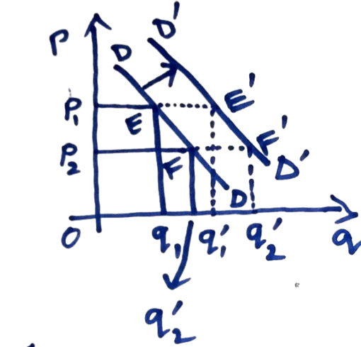
Given that the initial price is OP1, the quantity demanded increases from Oq1 to Oq’1. The point shifts from point E to point E’, and the demand curve shifts to the right.
Given that the initial price is OP2 the quantity demanded increases from Oq2 to Oq’2, which implies that point F shifts to F’. We obtain a series of points by repeating this procedure at each possible market price. We derive a new demand curve D’D′ by drawing a line connecting these points. Therefore, as income increases, the demand curve shifts to the right.
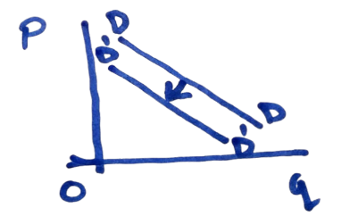
Similarly, if income decreases, the demand curve shifts to the left
Prices of related goods (substitutes and complements): As the price of a substitute good increases, people switch over to the good whose demand we are talking about, as it has become relatively cheaper, so the demand for that good increases.
As the price of a complementary good increases, the consumer demands less of the good whose demand we are talking about, as it is consumed with the complementary good together.
Consumer tastes and preferences: Tastes and Preferences also change demand, but it takes time.
- Law of Demand:
Definition: As the price of a product falls, the quantity demanded increases (and vice versa), assuming all other factors remain constant.
Graphical Representation:
Demand curve slopes downward from left to right.
This law of demand can be represented in the form of a function known as demand function.
- Demand Function (Inverse Form): P=f(q), f′(q)<0 where: P=own price of the commodity
q=quantity demanded
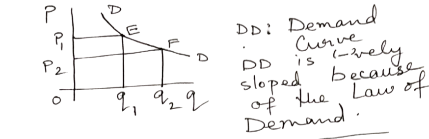
| Aspect | Change in Quantity Demanded | Change in Demand |
|---|---|---|
| Cause | Change in the price of the commodity. | Change in any underlying parameter (e.g., income, consumer preference). |
| Representation | Movement along the demand curve (upward or downward). | Shift of the demand curve (leftward or rightward). |
| Example |
- Price Elasticity of Demand:
Definition: The degree of response of quantity demanded to a change in price..
Formula: P=price; q=quantity; ΔP=change in price; Δq=change in quantity
Ep gives a negative value.
Absolute Price Elasticity of Demand:|Ep|= Consider only the magnitude
If Ep>1, demand is elastic (highly responsive to price changes).
If Ep<1, demand is inelastic (less responsive to price changes).
If Ep=1, demand is unitary elastic (proportional response to price change).
Elastic Goods: Demand changes significantly with price (luxury items).
Inelastic Goods: Demand barely changes with price (necessities).
Point Price Elasticity of Demand:
For infinitesimal changes in price (ΔP→0):
- Income Elasticity of Demand (Em):
Measures how quantity demanded changes with income.
Formula:
Let:
M= income
q= quantity demanded
Interpretation:
Em<0: Inferior good (demand decreases as income rises).
0≤Em≤1: Normal good (demand rises less than proportionally with income).
Em>1: Superior good (demand rises more than proportionally with income).
- Cross-Price Elasticity of Demand (Exy)
Measures how the quantity demanded of good y responds to a price change in good x.
Fo.rmula:
Interpretation:
Exy>0: Substitute goods (e.g., tea and coffee).
Exy<0: Complementary goods (e.g., cars and petrol)
1.5 Theory of Supply:
A. Determinants of Supply:
- Own price of the product.
Cost of production (materials, labor, etc.).
Technological advancements.
Government policies (taxes, subsidies).
Market expectations.
- Law of supply: Given the determinants of demand other than the own price of the product are constant, there exists a direct relationship between the own price of the commodity and quantity supplied.
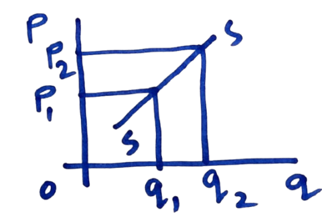
Supply Function:
A mathematical relationship between the quantity supplied and its determinants.
P=ψ(q), ψ’(q)>0
The supply curve shows that as the own price of the commodity increases, the quantity supplied also increases, as shown in the diagram.
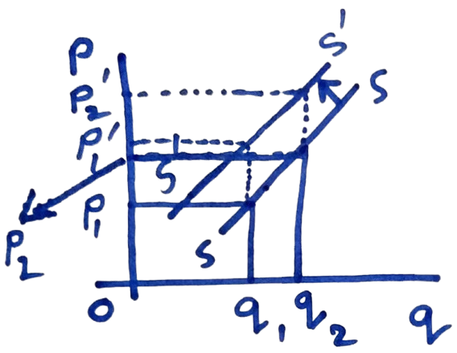
- Effect of an increase in input price on supply: as input price increases cost of production goes up and hence the same quantity is supplied at a higher supply price.so the the supply curve shifts to the left.
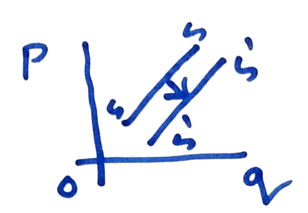
If the input price decreases, the supply curve shifts to the right.
As there technological advancement, the supply curve shifts to the right.
- Market Supply Curve: The horizontal summation of the Individual producers' supply curve. assume the market consists of two producers/ supplier, A & B.
- qA + qb = Q = Merket mechanism ; SM = Market supply curve
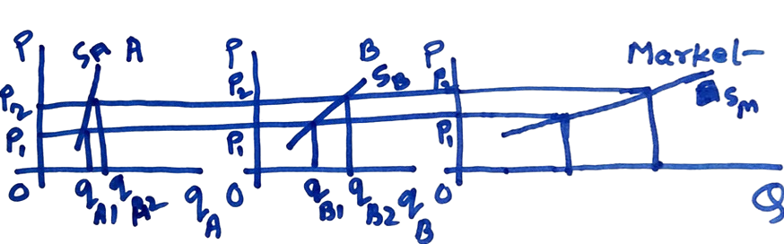
1.6 Market Mechanism:
Equilibrium (Price and Quantity): Determination of Market price
Definition: The point where quantity demanded equals quantity supplied.
Graphical Representation:
The DD and SS curves intersect at point E.
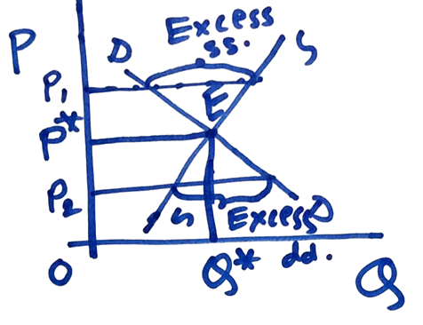
Significance of point E: At point E the price changed by the supplier for the quantity OQ* is also the price acceptable to the consumer for the same quantity. So there is an Agreement between the producer and consumer and so the exchange takes at point E.
E: Equilibrium point
OP*: Equilibrium price
OQ*: Equilibrium quantity
Stability of equilibrium: Suppose the market price is OP1 instead of OP*.At OP1, there is an excess supply- the quantity supplied is not fully demanded. The situation is that the market will induce prices to fall, and this will continue until the excess supply is eliminated. And the OP* price is restored. Similarly, when the market price is OP2, there will be excess demand. - Shortage of product will push up prices until OP* price is reached, where there is no excess demand. So even if the market deviates from equilibrium, forces are released, which bring the system back to the equilibrium; this is called the stability of the equilibrium.
Unstable equilibrium occurs when the demand curve is exceptionally positively sloped, and flatter, the supply curve. at OP1 there is excess demand, so prices go up. The system moves away from the equilibrium, so the system is unstable.
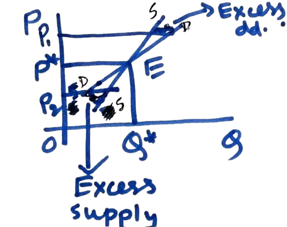
Effect of an increase in consumer income (On equilibrium): As income increases. DD curve shifts to the right to D’D’ equilibrium shifts from E1 to E2 both equilibrium price and quantity increase
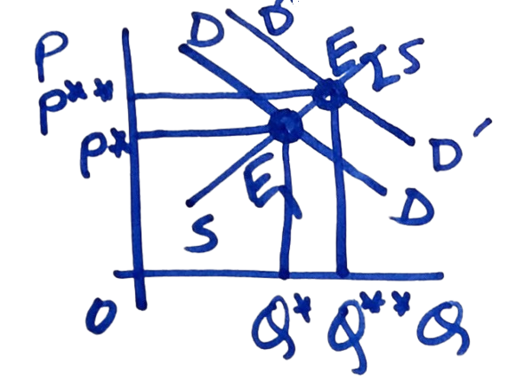
When demand card is positively sloped, but steeper than the supply curve, the equilibrium is stable at PGL to op on here is excess supply. Price starts holding this, continuing until equipment is reached.
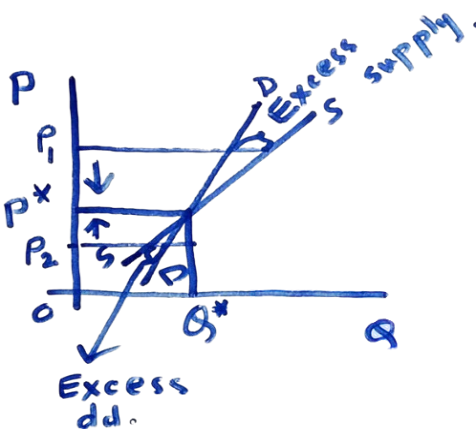
Stability: if a system is away from equilibrium, certain forces are released, which bring the system back to equilibrium.
At P = OP2 , there is excess demand- price starts to rise. This continues until equilibrium is reached.
The relationship between total expenditure and price elasticity of demand:
E = pq, p =price, q + quantity
Differentiating with respect to P, we get,
If It means that expenditure on the commodity reduces as price increases, if demand is price-elastic
If It means that expenditure on the commodity remains unchanged as price increases, if demand is unitary elastic to price,
If It means that expenditures on the commodity increase as price increases, if demand is price-elastic.
Increase in Demand:
Shifts the demand curve to the right.
Equilibrium price and quantity both increase.
Decrease in Supply:
Shifts the supply curve to the left.
Equilibrium price increases, but quantity decreases.
Numerical Problem Example:
Unit-II: Theory of Production & Costs
Concept of Production:
- Understanding Production in Terms of Goods and Services:
- Production: It is a technological relationship between inputs and output.
Let, Q = Output; L = Labour input; K = Capital input.
Goods: Physical, tangible products (e.g., cars, phones).
Services: Intangible outputs (e.g., education, healthcare).
- Factors of Production:
- Land: Natural resources used for production (e.g., minerals, land for factories).
- Labour: Human effort, both physical and mental.
- Capital: Man-made tools and machinery used in production (e.g., equipment, infrastructure).
- Entrepreneurship: The managerial and innovative skills to combine resources efficiently.
- Fixed and Variable Factors:
- Fixed Factors: Resources that do not change with the level of output in the short run (e.g., factory building, machinery).
- Variable Factors: Resources that change with the output level (e.g., labour, raw materials).
- Define production function: The production function is a functional representation of the technological relationship between inputs and outputs. Q = f (K, L);
= Marginal productivity of labour - The increase in output resulting from one additional unit of labour use, keeping the use of capital constant.
= Marginal productivity of capital.
- Sort run and long run:
Short run: It is the time span within which the producer is unable to vary all the inputs when market situation demands an expansion is output.
Long run: it is the timespan within which the producer can vary all the inputs when market situation demands an expansion is output.
In the short run, some inputs are variable. Example: raw material labour
In the long run, all inputs are variables. Example: land, capital
Let us assume that in the short run, capital is fixed So the short run production function is as follows:
- Total product(TP) curve (Short-Run Production Function):
Definition: Shows the relationship between input (labor or capital) and output when at least one input is fixed.
Up to point A, the TP carve is convex to the L axis. The tangent drawn at any point on the TP curve is becoming steeper. So, till point A, the rate of increase in output is greater than the rate of increase in the variable input, labour(L) At point A, the rates are equal. After point A & before point B is reached, the TP curve is concave to the L axis,- the tangent drawn at any point on TP Curve becomes flatter and flatter. So, the rate of increase in output is less than the rate of increase in Labour(L) at point B, after point B, <0 such that as Labour use increases, the level of output goes down. So, after point B, the portion of the TP curve shows the uneconomic zone
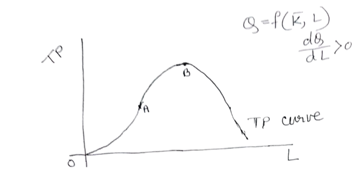
- Law of variable proportion: it is a short-run concept. It measures the impact of a change in variable input and consequent change in input proportion (K/L ratio) on output.
The law states the following:
- In the initial stage of production, an increase in the use of the variable input (labour) facilitates greater utilisation of the fixed input (capital). So, the rate of increase in output is greater than rate of increase in the variable input.
- Afterwards, at a certain point in time, the rate of increase in output is equal to the rate of increase in variable input.
- Later on, If the usage of variable input is increased further, the variable input becomes underutilised due to the lack of the other factor, which I fixed.. So, in this situation, the rate of increase in output is less than the rate of increase in variable input.
- Relationship between average product and of labour (APL) and the marginal product of labour (MPL):
where Q = Output, L = Labour input.
It measures output produced per unit of labour used.
It measures an increase in output resulting from a one-unit increase in labour use, given the use of fixed capital.
Relationship: Consider the short-run production function:-
Differentiating with respect to L, we get:
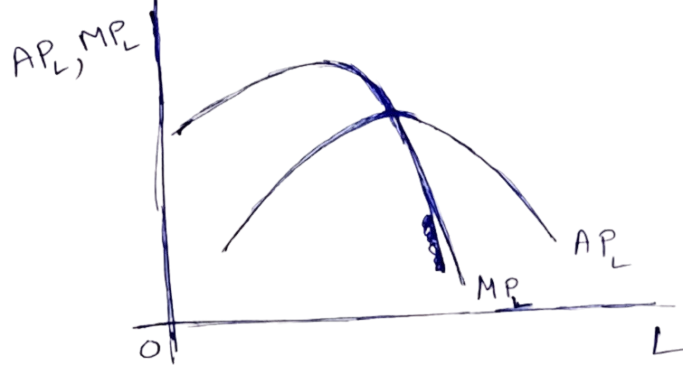
- When the APL curve is rising, i.e. Then MPL > APL., i.e. MPL curve lies above the APL curve
- When APL is maximum,.=0, then MPL = APL, such that MPL curve intersects the APL curve from above.
- When APL curve is falling, i.e..<0, then MPL lies below the APL curve.
- *BOTH CURVES ARE DOME-SHAPED*
- . Returns to scale:. It is a long-term concept. If all the inputs are increased by a certain proportion, the resulting impact on output is measured by returns to scale.
- If the rate of increase in output is greater than the rate of increase in all inputs, the producer experiences increasing returns to scale(IRS).
- If the rate of increase in output is equal to the rate of increase in all inputs, the producer experiences constant returns to scale (CRS).
- If the rate of increase in output is less than rate of increase in inputs, the producer experiences decreasing returns to scale (DRS).
- Properties of Cobb-Douglas Production Function: The Cobb-Douglas production function is very important as it is widely used in economic analysis. Cobb-Douglas production function:-
A,are constant
Properties:
- The ratio of MPL to MPK is a function of K – L ratio and independent of output.
C-D production function
is a function of K-L ratio and is independent of output
- The Cobb-Douglas production function is homogeneous of a degree(. Let, both the input capital(K) and labour(L) be increased by same proportion λ. (λ>1)
- let the increased output be
- Difference between variable input and fixed input:
| VARIABLE INPUT | FIXED INPUT |
|---|---|
| These inputs can be varied in the short run in order to increase output if necessary. Example: raw material, labour | These inputs cannot be varied in the short run to increase output, if necessary. Ex. land capital |
| Where there is no production, its usage is zero and its usage increases with an increase in output. | Its usage is independent of output, even when products stop, fixed input remains in the production unit. |
- Difference between returns to input/factor and returns to scale
| Returns to input/factor | Rurns to scale |
|---|---|
| It is short run concept | It is a long run concept |
| It measures the impact on output of an increase in the variable factor and consequent change in input Proportion. | It measures the impact on output of a certain percentage change in all the factors or inputs. |
- How long is the long run?
The term long run cannot be quantified It can be qualitatively defined. Long-run is the time span within which the producer has the freedom to change the usage of all the inputs in a market situation that demands an expansion in output. So it is not possible to universally Quantify the long run.
Theory of cost:
- Cost of production: The expenditure on inputs incurred by a producer in the course of production is called the cost of production. Using inputs in the course of producing products in a cost. The producer has to pay wages to labour, rent for land, interest for money borrowed to purchase capital and a part of the profit for the organisation
- Opportunity cost: it is the benefit sacrificed by an input for remaining in its present use. Each input has alternative uses. Let us consider a piece of land where a car-repairing garage has been set up. If the car-repairing shop was not there, the owner of the land could have put the land to some alternative uses, like setting up a bakery. The earning from the bakery is the opportunity cost of the price of land where the car-repairing garage has been set up.
- Variable cost and fixed cost. Variable cost is the expenditure on variable input. For example, labour cost.
Fixed cost is the expenditure on fixed inputs. For example: cost of land or cost of capital
The concept of these two types of cost is applicable in the short run. In the long run, all costs are variable.
A. Explanation for the use U-shape of the short-run average cost (SRAC) curve: let output Q, produced by two inputs, labour (L) and capital (K) . Let (w) be the given unit price of labour and (r) be the unit price of capital. Further, lets (c) be the total cost of production.
C = wL + rK
Average cost (AC) is defined as production cost per unit output.
Now, the short run capital is fixed at the level, say, .
Let, It is the total fixed cost, or TFC.
WL= total variable cost = TVC
The shape of SRSE is dependent on the shapes of AVC and AFC curves
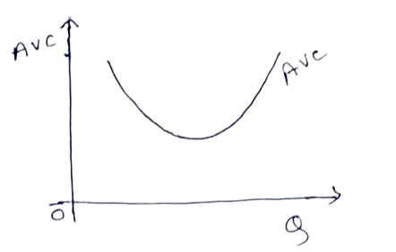
Now
The average product of Labour curve has the shape of an inverted U, since AVC has evident from above relation the inverted image of APL , the AVC curve is U shaped.
Next

so AFC has the shape of a rectangular hyperbola.
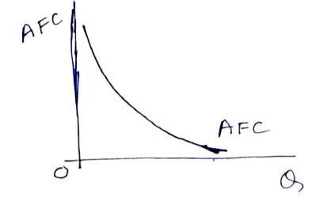
To find the SRAC Curve, we have to draw both the AVC and AFC curves in the same diagram.
The vertical addition of the AVC and AFC curves gives us the SRAC curve. At each level of output, adding up the values of AVC and AFC vertically, we get successive points on the SRAC curve. Joining this point, we get the SRAC curve, which is u U-shaped. Initially, when AVC and AFC curves both are falling the SRAC curve is also falling at a later stage. The rising AVC curve overpowers the falling AFC curve, and as a result, the SRAC curve starts rising. This is why the SRAC Curve is U-shaped.
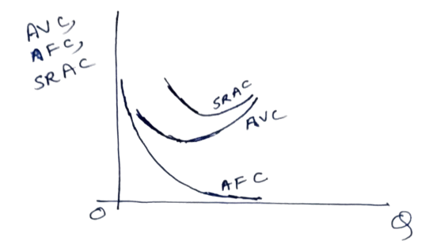
- AC and MC curves:
Average cost is the cost incurred by the producer per unit top output produced.
Marginal cost is the additional cost incurred by a producer for producing one additional unit of output.
- Relationship between AC and MC curves:
So, profit is maximised at the level of output at which marginal revenue is equal to the marginal cost.
Let us explain the economic interpretation of the first-order condition for Profit maximisation. If MR>MC, The additional revenue earned by selling one additional unit of output exceeds the additional cost of producing one additional unit of output. So at this point producer’s profit is increasing, and hence the producer will increase production. On the other hand, if MR<MC, the producer's profit is decreasing, and hence the producer will decide for a contraction in output. So only at the point where MR=MC, profit is maximum.
The second order condition for profit maximisation is
- Problem on profit maximisation
Unit-III: Different Types of Market and Role of Government
Perfect Competition:
- Characteristics and Features of Perfectly Competitive Markets:
Perfect competition is a market structure characterized by ideal conditions for competition among firms. Key features include:
- Large Number of Buyers and Sellers:
There are so many participants that no single buyer or seller can influence the market price.
The market price is determined by aggregate demand and supply.
Homogeneous Products:
All firms produce identical or perfectly substitutable products.
Consumers are indifferent to the choice of seller.
Free Entry and Exit:
Firms can enter or leave the market without significant barriers (e.g., no regulatory hurdles or high capital requirements).
Perfect Information:
Buyers and sellers have complete knowledge about prices, products, and market conditions.
This ensures that all participants make informed decisions.
Price Takers:
Firms and consumers accept the market price as given since no single participant has the power to influence it.
Profit Maximization:
Firms aim to produce at a level where Marginal Cost (MC) = Marginal Revenue (MR) to maximize profit.
No Government Intervention:
The market operates purely on the forces of demand and supply.
Example of Perfect Competition:
Agricultural markets (e.g., wheat, rice, or other grains) often approximate perfect competition due to the standardized nature of the product.
Graphical Illustration:
The firm’s demand curve is perfectly elastic (horizontal) at the market price since it can sell any quantity at that price.
Profit maximization occurs where the MC curve intersects the MR curve.
Imperfect Competition:
- Overview of Monopoly:
- Definition: A market structure where a single seller controls the entire supply of a product or service.
Key Features:
- Single Seller: The firm is the sole producer, with no close substitutes for its product.
Barriers to Entry: High entry barriers prevent other firms from entering the market (e.g., legal restrictions, economies of scale, or resource ownership).
Price Maker: The monopolist determines the price of its product.
Lack of Competition: Consumers have no alternative but to buy from the monopolist.
Example: Utility providers like electricity or water companies in some regions.
- Monopolistic Competition:
- Definition: A market structure where many firms sell similar but not identical products.
Key Features:
Product Differentiation: Firms sell products with unique features, branding, or quality.
Large Number of Firms: Many sellers compete, but each has some degree of market power.
Non-Price Competition: Firms compete through advertising, branding, and product features rather than price.
Freedom of Entry and Exit: Barriers to entry and exit are relatively low.
Example: The market for restaurants, clothing brands, or cosmetic products.
- Oligopoly:
- Definition: A market structure where a few large firms dominate the market.
Key Features:
Few Sellers: A small number of firms hold significant market share.
Interdependence: Firms consider the actions of competitors when making decisions (e.g., pricing, advertising).
Barriers to Entry: High costs or complex technology act as barriers to new entrants.
Price Rigidity: Prices tend to remain stable because firms fear starting a price war.
Example: Automobile manufacturers (e.g., Toyota, Ford, Hyundai) or smartphone markets.
3.3 Government's Role in the Economy:
A. In Socialist Economies:
- Definition: The government owns and controls the means of production, and economic decisions are made centrally.
Role of Government:
Direct control of resources to ensure equitable distribution.
Planning and regulation of production to meet social objectives (e.g., healthcare, education).
No role for private ownership.
Example: Former Soviet Union and Cuba.
- In Capitalist Economies:
- Definition: The means of production are privately owned, and the market operates based on supply and demand.
Role of Government:
Protect property rights and enforce contracts.
Ensure market competition by preventing monopolies and regulating anti-competitive behavior.
Minimal intervention, allowing free-market forces to dictate economic outcomes.
Example: The United States, where private businesses drive economic growth.
- Capitalist Economy: Pros & Cons
✔️ Merits (Pros)
Efficient resource allocation (market-driven).
Boosts innovation & competition.
High economic growth & productivity.
Consumer choice & variety.
Rewards entrepreneurship & investment.
❌ Demerits (Cons)
Creates wealth inequality (rich-poor gap).
Risk of monopolies & exploitation.
Economic instability (recessions, unemployment).
Neglects public welfare (healthcare, environment).
Short-term profit focus over long-term sustainability.
- In Mixed Economies:
- Definition: A blend of socialism and capitalism where both private and public sectors coexist.
Role of Government:
Ownership and regulation of critical industries (e.g., healthcare, defense).
Encouraging private enterprise and innovation while addressing income inequality.
Providing public goods and services (e.g., infrastructure, education).
Example: India, where both state-owned enterprises and private businesses operate.
| Feature | Perfectly Competitive Market | Monopoly |
|---|---|---|
| Number of Buyers/Sellers | Large number of small buyers and sellers. No single entity controls the market. | Large number of buyers, but only one seller (monopolist). |
| Product Type | Homogeneous product (identical products across sellers). | Homogeneous product (only one product offered by the monopolist). |
| Entry/Exit of Firms | Free entry/exit of firms in the long run (no barriers). | Entry of firms is prohibited (high legal, technological, or resource barriers). |
| Price Control | Market price is taken as given by buyers and sellers (price takers). | Monopolist has absolute power to set prices (price maker). |
Group-B: Project Management
Unit-I: Concept of Project
Definition and Classification of Projects.
- Definition of a Project:
- A project is a temporary and goal-oriented effort undertaken to create a unique product, service, or result.
Projects typically demand the use of resources that are scarce or expensive but must be deployed within a comprehensive framework of tasks to achieve a defined goal.
It has a defined start and end point, specific objectives, and allocated resources.
Projects are distinct from routine operations due to their temporary nature and focus on achieving a specific outcome.
- Characteristics of a Project:
- Uniqueness: Every project is different in terms of objectives, deliverables, and processes.
Defined Objectives: Projects are executed to achieve specific goals.
Temporary Nature: A project has a clear beginning and end.
Resource Constraints: Limited resources such as time, money, and personnel are allocated.
Uncertainty: Projects often face risks and uncertainties due to their dynamic nature.
- Classification of Projects:
Projects can be classified based on various factors, including:
- Based on Objective:
- Industrial Projects: Construction of factories, manufacturing facilities, etc.
Infrastructure Projects: Roads, bridges, dams, etc.
IT Projects: Software development, app creation, etc.
R&D Projects: Research on new technologies or products.
Based on Complexity:
Simple Projects: Involve few tasks, such as organizing a meeting.
Complex Projects: Involve multiple tasks and teams, such as constructing a skyscraper.
Based on Sector:
Public Sector Projects: Funded and managed by the government (e.g., metro systems).
Private Sector Projects: Funded by private entities (e.g., shopping malls).
Based on Size:
Small Projects: Limited scope and budget (e.g., website development).
Large Projects: Extensive resources and high complexity (e.g., space exploration).
Importance of Project Management:
- Definition of Project Management: Project management is the process of applying knowledge, skills, tools, and techniques to execute a project effectively and efficiently. It involves planning, organizing, and controlling resources to achieve specific goals within constraints.
- Key Roles of Project Management:
- Achieving Goals: Ensures that project objectives are met on time, within budget, and with desired quality.
Efficient Resource Utilization: Optimizes the use of financial, human, and material resources.
Risk Management: Identifies and mitigates risks to avoid project delays or failures.
Improving Communication: Facilitates coordination and communication among stakeholders.
Enhancing Decision-Making: Provides structured approaches for planning, monitoring, and executing tasks.
Ensuring Stakeholder Satisfaction: Balances the needs and expectations of all parties involved in the project.
- Why Project Management is Important:
Projects often involve limited resources, tight deadlines, and complex interdependencies. Effective project management helps ensure that:
Tasks are completed on time.
Costs are controlled.
Quality standards are maintained.
1.3 Project Life Cycle:
- The Project Life Cycle describes the stages a project goes through from initiation to completion. It provides a framework for managing projects in an organized and systematic way.this involves-
- Conceptualization/Initiation
- Goal: Define purpose, scope, and feasibility.
Activities:
Identify problem/need (e.g., energy demand → solar plant).
Set scope, objectives, and stakeholder expectations.
Conduct feasibility studies
Obtain approvals and secure funding.
Create project charter and proposal.
Create a RACI chart to clarify roles.
Tools: Feasibility Study Report: Evaluates viability.
Project Charter: Outlines risks, constraints, and stakeholders.
RACI Chart: Assigns responsibilitie
- Planning
- Goal: Develop an actionable roadmap.
Activities:
Create schedule, budget, resource plan with milestones.
Identify risks (risk register) and mitigation strategies.
Define communication protocols; hold kick-off meeting.
- Tools: Gantt Chart: Visualises timelines and dependencies.
Risk Register: Tracks risks and mitigation plans.
Communication Plan: Defines stakeholder engagement.
- Execution
- Goal: Implement plan and manage tasks.
Activities:
Allocate resources (e.g., construct solar panels).
Track progress (burndown charts), manage costs/risks.
Handle changes via change requests; update stakeholders.
- Tools: Burndown Chart: Tracks task completion.
Change Requests: Formalizes scope adjustments.
.
- Termination/Closing
- Goal: Finalise deliverables and close the project.
Activities:
Verify objectives met (e.g., final inspection).
Document lessons learned; release resources.
Deliver outputs to the client; prepare closeout/impact reports.
- Tools: Project Closeout Report: Summarises outcomes and learnings.
Impact Report: Measures project success against metrics.
.
Importance of Understanding the Project Life Cycle:
Helps in systematic project management by breaking the project into manageable stages.
Provides clear objectives for each phase.
Ensures better monitoring and control over the project’s progress.
Minimizes risks and enhances the likelihood of achieving desired outcomes.
Unit-II: Feasibility Analysis of a Project
Economic and Market Analysis:
Assessing the economic viability and market demand of a project.
Financial Analysis:
- Evaluation of investment projects: In business, whenever a producer wants to take up a new project. (For example, given the setting up of a new unit,) he/she has to calculate the profitability/ viability/feasibility of the project. Now, to evaluate an investment project, several methods exist
- Traditional methods:
- Payback Method
- Average rate of return (ARR) method
- Modern methods:
- Net present value (NPV) method.
- Internal rate of return (IRR) method
- Cost-benefit analysis.
- Payback period Method: It calculates the number of years required to recover the initial money invested in a project from the income flow generated by the project.
This method is straightforward to understand, but it does not account for the future income flow into the present. It does not consider the time value of money, but to calculate the profitability of a project property, we need to find out the present value of the future income flow.
This is true for the ARR method as well.
So both the traditional methods were found to be inadequate to evaluate the investment project.
later on, Modern methods were developed where the time value of money was taken into account. And the present discounted value of the future income stream.
- Net present value method: Suppose C is the initial cost of an Investment project, the lifespan of the project is n years (where n is a finite, positive integer.) Suppose Y1, Y2, …., Yn-1, yn are the future income generated it from the project over n years.
Present value of the future income flow:-
[Note: Suppose Re1 is the current investment. If r is the uniform rate of return annually received, (1+r)will be the income in the first year, (1+r) + (1+r)r = (1+r)2 in the second year, and so on.
Sum on NPV Criterion:- A producer is considering investment in a project that costs 1,00,000 with an effective life of 5 years. It is expected that annually, cash flows of 36,000 , 32,000 , 28,000 , 24,000 and 20,000 will be generated from project in the frist, second, third, fourth and fifth year, respectively. If the cost of capital is 10% calculate the net present value of the project. Is the project worthy of being implemented?
Internal rate of return (IRR) method:-
Solving this equation, we get a value a value of r, say, r*, which is the internal rate of return of the Project. if the market rate of interest is less than or equal to the IRR, r*, the project will be taken up If the market rate of return is greater than the IRR, the project will be rejected.
Sum on IRR method: Suppose an asset having a face value of Rs 1000, yields an income of Rs 2500 in the first year and Rs 1500 in the second year, after which the asset becomes dormant. Find the higher value of if the market interest rate is 3%, will purchasing the asset be worthwhile?
Environmental Impact Study:
Understanding adverse impacts of projects on the environment.
Project Risks and Uncertainty:
Projects face various forms of risk (measurable potential losses) and uncertainty (unpredictable factors). Understanding these helps in mitigation planning.
1. Financial Risks
Cost Overruns: Budget exceeds due to inflation, poor estimation, or scope changes.
Funding Shortages: Lack of capital or delayed financing.
Currency Fluctuations: Exchange rate volatility in international projects.
Liquidity Risks: Inability to meet short-term obligations.
Mitigation: Contingency budgets, hedging, diversified funding.
2. Operational Risks
Supply Chain Disruptions: Delays in material procurement or supplier failures.
Technical Failures: Equipment breakdowns or technology obsolescence.
Process Inefficiencies: Poor workflow leading to delays/costs.
Mitigation: Redundant suppliers, regular maintenance, process audits.
3. Market Risks
Demand Shifts: Changing customer preferences reduce project viability.
Competition: New entrants or substitutes affect profitability.
Regulatory Changes: New laws (e.g., environmental, tax) increase compliance costs.
Mitigation: Market research, agile planning, regulatory monitoring.
4. Strategic Risks
Alignment Errors: Project goals mismatch with organizational strategy.
Reputation Damage: Poor execution harms brand value.
Mergers/Acquisitions: Integration challenges disrupt projects.
Mitigation: Stakeholder alignment, PR management, phased integration.
5. Environmental & External Risks
Natural Disasters: Floods, earthquakes, or pandemics halt progress.
Political Instability: Policy shifts or unrest in project locations.
Economic Recessions: Reduced demand or investment capability.
Mitigation: Insurance, geographic diversification, scenario planning.
6. Project Management Risks
Scope Creep: Uncontrolled expansion of project deliverables.
Schedule Delays: Poor time estimation or resource allocation.
Team Conflicts: Miscommunication or skill gaps.
Mitigation: Clear contracts, Gantt charts, conflict resolution protocols.
Uncertainty vs. Risk
Risk: Quantifiable (e.g., 20% chance of cost overrun).
Uncertainty: Unpredictable (e.g., sudden regulatory change).
Handling Uncertainty: Flexible frameworks (Agile), iterative testing, stakeholder feedback loops.
Financial Health Evaluation:
- Capital
Capital is the life-blood of a business enterprise.
Capital is a universal lubricant which keeps enterprise dynamic.
Capital designates physical sources when applied to production and (it means) money when applied to finance.
Capital, in its meaning, covers all the elements (e.g., money, land, building, machinery, materials, etc.) a businessman needs to start an enterprise.
Capital is the measure of the amount of resources of an enterprise.
Capital develops products, keeps workers and machines at work, encourages management to make progress and create value.
Types of Capital: Capital may be of the following two types:
- Fixed Capital
When an industrial enterprise is started from the ground up, it requires capital to make/purchase Land, Building, Equipment and Machinery, Tools, and Furniture, etc.
Assets of this type are used over and over again for a number of years and are commonly termed Fixed Capital.
- WORKING CAPITAL
Definition
Working Capital refers to a firm’s investment in short-term assets—cash, short-term securities, accounts receivable, and inventories.
Net Working Capital is defined as current assets minus current liabilities.
Working Capital management refers to all aspects of the administration of both current assets and current liabilities.
Working capital is needed in any business because of the time lag between paying for materials and operating costs and getting the money back (with profit) from the customer.
Sources of Working Capital
Funds from business operations.
Other incomes such as dividends, transfer fees, donations, interest from investments.
Sale of non-current assets (e.g., obsolete plant and machinery).
Long-term borrowings.
Issue of additional equity or preference share capital.
Uses of Working Capital
Loss from business operations decreases working capital.
Purchase of non-current assets (reduces current assets or increases liabilities).
Retirement of long-term liabilities (e.g., payment to preference shareholders).
Dividend to shareholders.
Interest to lenders.
- SOURCES OF FINANCE
Introduction
- To start an industrial concern, adequate finance is needed for fixed assets (building, machinery), raw materials, and day-to-day expenditures.
Sources of finance may be categorized as Internal and External.
Internal Sources
Personal Funds Saved or Inherited (owner’s investment to win external financiers' confidence).
Savings (e.g., life insurance, stocks, bonds, bank deposits).
Loans (from friends, money-lending institutions, banks).
Shares (issued to raise funds):
Preference Shares: Fixed dividend, priority over ordinary shares.
Types: Cumulative, Non-cumulative, Participating.
Ordinary Shares: Higher risk, variable dividend.
Deferred Shares: Issued to founders; dividend paid last.
Debentures: Certificates of indebtedness with fixed interest, repayable after a stated period.
Debentureholders are creditors (not owners).
Debentures vs. Shares
| Debentures | Shares |
|---|---|
| Creditor status | Ownership interest |
| Fixed interest | Variable dividend |
| Interest paid even in loss | Dividend depends on profit |
| Repayable after term | Not refundable |
| Priority in liquidation | Paid after debentureholders |
- ASSETS: Assets are resources of a business (e.g., properties, equipment, stocks, cash).
Types
- Current Assets: Convertible to cash within a year (cash, receivables, inventory).
Fixed Assets: Long-term (land, building, machinery).
Other Assets: Intangible (patents, goodwill) or long-term investments.
- LIABILITIES: Claims against the business (owed to creditors).
Types
- Current Liabilities: Due within a year (bank overdraft, wages, trade credit).
Fixed Liabilities: Long-term (owner’s capital, debentures, reserves).
Contingent Liabilities: Potential liabilities (e.g., guarantees).
- FINANCIAL STATEMENTS
Profit and Loss Statement
Reports revenues, expenses, and net profit/loss for a period.
Example:
Sales: Rs. 50,000
Expenses: Rs. 43,000
Net Income: Rs. 38,000
Balance Sheet
Snapshot of financial status (assets, liabilities, equity).
Example:
Assets: Cash, inventory, machinery.
Liabilities: Creditors, loans.
Equity: Capital, retained profits.
F. FINANCIAL RATIOS
1. Liquidity Ratios
Definition: Liquidity ratios measure a company’s ability to meet its short-term financial obligations using its current or quick assets. These ratios indicate financial stability and operational efficiency.
Key Ratios:
Current Ratio = Current Assets / Current Liabilities
A ratio above 1.0 suggests the firm can cover short-term debts.
Quick Ratio (Acid-Test Ratio) = (Current Assets – Inventory) / Current Liabilities
Excludes inventory (least liquid asset) for a stricter assessment.
Significance:
Helps creditors and investors assess risk.
Low ratios may indicate cash flow problems.
- Activity Ratios
- Definition: Activity ratios measure how efficiently a company utilizes its assets to generate sales and revenue. These ratios assess operational performance and asset management.
- Key Ratios:
- Inventory Turnover Ratio = Cost of Goods Sold (COGS) / Average Inventory
- Indicates how quickly inventory is sold and replaced.
- A higher ratio suggests efficient inventory management.
- Receivables Turnover Ratio = Net Credit Sales / Average Accounts Receivable
- Measures how quickly the company collects payments from customers.
- A higher ratio indicates effective credit and collection policies.
- Asset Turnover Ratio = Net Sales / Total Assets
- Evaluates how efficiently assets generate revenue.
- A higher ratio means better asset utilization.
- Significance:
- Helps identify inefficiencies in inventory, receivables, or asset use.
- Useful for comparing performance across industries.
- Leverage Ratios
- Definition: Leverage ratios assess a company’s reliance on debt financing and its ability to meet long-term financial obligations. These ratios evaluate financial risk and capital structure.
- Key Ratios:
- Debt-to-Equity Ratio = Total Debt / Shareholders’ Equity
- Measures the proportion of debt relative to equity.
- A ratio > 1 indicates higher debt reliance (higher risk).
- Interest Coverage Ratio = EBIT / Interest Expense
- Assesses the firm’s ability to pay interest on debt.
- A higher ratio (>2 or 3) suggests financial stability.
- Debt Ratio = Total Debt / Total Assets
- Shows the percentage of assets financed by debt.
- A lower ratio indicates less financial risk.
- Significance:
- Helps investors and creditors evaluate financial stability.
- High leverage may increase returns but also bankruptcy risk.
- Profitability Ratios
Definition: Profitability ratios evaluate a company’s ability to generate earnings relative to revenue, assets, or equity. They reflect operational efficiency and financial health.
Key Ratios:
Profit Margin = Net Income / Net Sales
Shows profit per rupee of sales.
Return on Assets (ROA) = Net Income / Total Assets
Measures how efficiently assets generate profit.
Return on Equity (ROE) = Net Income / Shareholders’ Equity
Indicates profitability relative to owners’ investments.
Significance:
Used by investors to compare performance across firms.
High ratios suggest effective management and growth potential.
Conclusion:
Liquidity ratios focus on short-term solvency, while profitability ratios assess long-term earnings potential. Both are vital for financial analysis.
SOURCES OF FINANCE (Summary)
Long-term: Shares, debentures, retained profits.
Medium/Short-term: Loans, trade credit.
Unit-III: Project Administration
3.1 Gantt Charts
A. Definition:
A Gantt chart is a visual project management tool that uses horizontal bars to represent a project's tasks and their timelines. It helps in planning, scheduling, and tracking the progress of a project.
B. Key Components:
- Tasks:
Listed as rows on the vertical axis.
Each task represents a specific activity or milestone in the project.
Timeline:
Shown as the horizontal axis (days, weeks, months).
Represents the duration for which the project or individual tasks will run.
Bars: Horizontal bars span across the timeline, indicating the start and end dates of tasks.
- Purpose of Gantt Charts:
- To visualize the schedule of tasks in a project.
To identify dependencies between tasks.
To track progress and ensure tasks are completed on time.
- How to Use a Gantt Chart:
- List all project tasks.
Assign start and end dates for each task.
Place the tasks on the timeline as bars.
Use different colors or patterns to indicate:
Completed tasks.
Ongoing tasks.
Pending tasks.
Update the chart regularly to monitor progress.
- Benefits of Gantt Charts:
- Clear and simple visualization of project timelines.
Easy identification of overlapping tasks or bottlenecks.
Helps in resource allocation and workload balancing.
Example:
For a construction project:
Tasks could include: Site preparation, foundation laying, framing, electrical work, and final inspection.
The Gantt chart will show the timelines for each of these activities, allowing the project manager to track whether they are on schedule.
3.2 PERT and CPM
Both PERT (Program Evaluation and Review Technique) and CPM (Critical Path Method) are project management tools used for planning, scheduling, and controlling project activities.
- PERT (Program Evaluation and Review Technique):
- Definition: A statistical tool used to analyze the tasks involved in completing a project, especially when there is uncertainty in task durations.
Key Features:
Focuses on probabilistic time estimates:
Optimistic Time (O): Shortest time to complete a task.
Most Likely Time (M): Most realistic time to complete a task.
Pessimistic Time (P): Longest time to complete a task.
Expected Time (TE): Weighted average time. TE=O+4M+P6TE = \frac{O + 4M + P}{6}TE=6O+4M+P
Identifies the critical path (the sequence of tasks that determines the minimum project duration).
When to Use PERT: For projects with high uncertainty, such as research or new product development.
Example:
For launching a new product:
Tasks include: Market research, product design, prototype development, testing, and marketing.
PERT helps estimate how long each task might take, including delays, and identifies dependencies.
B. CPM (Critical Path Method):
- Definition: A deterministic tool that focuses on the longest sequence of dependent tasks (critical path) to determine the project’s minimum completion time.
Key Features:
Assumes deterministic task durations (known with certainty).
Critical Path:
The sequence of tasks that directly impacts the project's completion time.
Delays in any critical task will delay the entire project.
Slack Time:
Non-critical tasks may have some flexibility (slack) without delaying the project.
When to Use CPM:
For projects with well-defined tasks and durations, such as construction or manufacturing.
Example:
For building a bridge:
Tasks include: Designing, material procurement, foundation work, assembling, and finishing.
CPM identifies the sequence of tasks that must be completed on time to meet the project deadline.
Comparison of PERT and CPM:
| Aspect | PERT | CPM |
|---|---|---|
| Time Estimates | Probabilistic (O, M, P) | Deterministic (known durations) |
| Focus | Time management | Cost and time management |
| Use Case | Research and development projects | Construction and manufacturing |